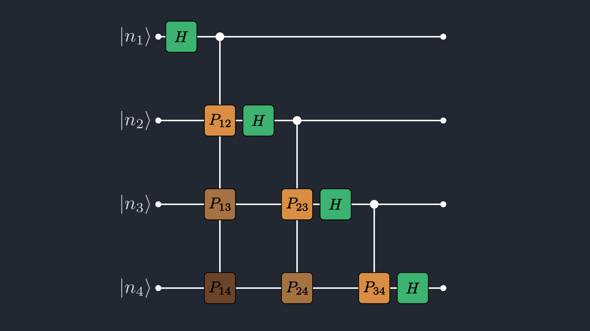
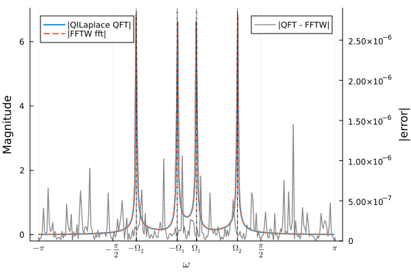

Discrete Fourier Transform Tutorial
This walkthrough shows how to use QILaplace.jl to compute the DFT.
The Quantum Fourier Transform (QFT) is the unitary transform underlying several quantum algorithms. In modern form it was formalized in early quantum computing work (notably Coppersmith, 1994) and popularized by Shor's factoring algorithm. In this tutorial, we use the same linear map on a classical tensor-network state.
For a register of $n$ qubits ($N = 2^n$ basis states), the QFT is defined by
\[\mathrm{QFT}_N\,|x\rangle = \frac{1}{\sqrt{N}}\sum_{k=0}^{N-1} e^{-2\pi ixk/N}|k\rangle,\]
where $x,k\in\{0,\dots,N-1\}$ and $|x\rangle$ denotes the computational basis state corresponding to the binary encoding of index $x$: $|x\rangle = |x_1x_2\dots x_n\rangle$.
In QILaplace.jl, we first encode a length-$N$ signal into an MPS, $\sum_{x=0}^{N-1} a_x |x\rangle$, then apply a compressed QFT MPO built from Hadamard and controlled-phase gates.
using QILaplace, ITensors
using FFTW, LinearAlgebraSetting up the signal
Create a $2^n$-point signal (here $n=4$, so $N=16$):
n = 4
N = 2^n
dt = 1 / N
x = generate_signal(n, kind=:sin, dt=dt, freq=2π)16-element Vector{Float64}:
0.0
0.3826834323650898
0.7071067811865475
0.9238795325112867
1.0
0.9238795325112867
0.7071067811865476
0.3826834323650899
1.2246467991473532e-16
-0.38268343236508967
-0.7071067811865475
-0.9238795325112865
-1.0
-0.9238795325112866
-0.7071067811865477
-0.3826834323650904Constructing the SignalMPS
sites = [Index(2, "site-$i") for i in 1:n]
psi_test = signal_mps(x)SignalMPS with 4 sites:
Site 1: dim=2, tags="site-1" | dim=1, tags="bond-1"
Site 2: dim=1, tags="bond-1" | dim=2, tags="site-2" | dim=2, tags="bond-2"
Site 3: dim=2, tags="bond-2" | dim=2, tags="site-3" | dim=2, tags="bond-3"
Site 4: dim=2, tags="bond-3" | dim=2, tags="site-4"
Coefficient-level validation and signal-compression diagnostics are now covered in the dedicated signal.jl tutorial so that this page stays focused on DFT/QFT.
Constructing the QFT circuit
In this tutorial, the QFT is the circuit-level representation of the Fourier transform that we apply to the compressed SignalMPS. Instead of forming the dense Fourier matrix, QILaplace.jl builds the QFT as a compressed MPO from local Hadamard and controlled-phase gates, then contracts that MPO directly with the MPS.

Figure 1. Four-qubit QFT circuit in product form: each wire receives a Hadamard gate followed by controlled-phase gates ($P_{ij}$) from less significant wires. The unswapped output is in bit-reversed order.
In the product-form circuit, outputs come out in bit-reversed order relative to standard DFT indexing: if $k = k_{n-1}\dots k_1k_0$, the unswapped output is indexed by $\operatorname{rev}(k)=k_0k_1\dots k_{n-1}$.
This is why we either (i) append explicit SWAP gates at the end of the QFT circuit, (ii) sample the MPS by keeping the bit-reversed ordering in mind, or (iii) account for reversal when converting the transformed MPS to a dense vector for comparison with FFT-based reference implementations.
In this QFT circuit, the Hadamard gate ($H$) and phase gate ($P_{ij}$) are:
\[H = \frac{1}{\sqrt{2}} \begin{pmatrix} 1 & 1 \\ 1 & -1 \end{pmatrix} \quad P_{ij} = \begin{pmatrix} 1 & 0 \\ 0 & e^{-2\pi i / 2^{j-i+1}} \end{pmatrix}\]
Controlled-phase action:
- If the control qubit is $|0\rangle$, nothing happens to the target.
- If the control qubit is $|1\rangle$, the target picks up the phase defined by $P_{ij}$.
qft_mpo = build_qft_mpo(psi_test; cutoff=1e-14, maxdim=100)SingleSiteMPO with 4 sites:
Site 1: dim=2, tags="site-1" | dim=2, tags="site-1" | dim=2, tags="bond-1"
Site 2: dim=2, tags="site-2" | dim=2, tags="site-2" | dim=2, tags="bond-1" | dim=4, tags="bond-2"
Site 3: dim=2, tags="site-3" | dim=2, tags="site-3" | dim=4, tags="bond-2" | dim=2, tags="bond-3"
Site 4: dim=2, tags="site-4" | dim=2, tags="site-4" | dim=2, tags="bond-3"
Ensure MPS and MPO use exactly the same site indices before applying.
truePerforming the Fourier Transform
psi_qn = apply(qft_mpo, psi_test)SignalMPS with 4 sites:
Site 1: dim=2, tags="site-1" | dim=2, tags="bond-1"
Site 2: dim=2, tags="bond-1" | dim=2, tags="site-2" | dim=8, tags="bond-2"
Site 3: dim=8, tags="bond-2" | dim=2, tags="site-3" | dim=4, tags="bond-3"
Site 4: dim=4, tags="bond-3" | dim=2, tags="site-4"
You can also simply multiply the QFT MPO with the SignalMPS using qft_mpo * psi_test.
To compare the results of our transform, we use FFTW.jl as the reference to verify our transform results. FFTW conventions are:
\[\mathrm{fft}(x)_k = \sum_{x=0}^{N-1} x_x\,e^{-2\pi i xk/N}.\]
Our QFT convention uses the $-2\pi i$ phase and includes $1/\sqrt{N}$, so for normalized input $\hat{x}=x/\|x\|_2$ we expect
\[\mathrm{QFT}_N\hat{x} = \frac{\mathrm{fft}(\hat{x})}{\sqrt{N}}.\]
This package uses the -2πi forward phase with 1/sqrt(N) scaling. Some standard QFT textbooks have the forward QFT with a $+2\pi i$ phase instead of $-2\pi i$ phase, although classically, the forward fft has a $-2\pi i$ phase.
We can use the package utility mps_to_vector directly. With reverse=true, it returns output-index bit reversal (FFT ordering).
mps_to_vector is practical for small to moderate $n$ and debugging. For very large systems, dense reconstruction is exponentially expensive in memory/time. We recommend sampling the spectrum directly from the MPS form in such cases.
Next we compare QILaplace output with FFTW and sample a few indices.
N = length(x)
qft_qn = mps_to_vector(psi_qn; reverse=false)
qft_fn = mps_to_vector(psi_qn; reverse=true)
fftw_ref = fft(x) / sqrt(N)
println("\nQFT coefficients in circuit order (unswapped):")
println(round.(qft_qn; digits=5))
println("\nQFT coefficients in FFT order (bit-reversed):")
println(round.(qft_fn; digits=5))
comparison_error = norm(qft_fn - fftw_ref)
@show comparison_error1.85381668265297e-15Explicit sampling for k = 1 and k = 7. n=4:
- k=1 -> binary 0001 -> reversed 1000 -> index 8 in 0-based -> 9 in Julia.
- k=7 -> binary 0111 -> reversed 1110 -> index 14 in 0-based -> 15 in Julia.
k1 = 1
idx_fn_k1 = k1 + 1
idx_qn_k1 = 9
qft_val_k1 = round(qft_qn[idx_qn_k1]; digits=5)
fftw_val_k1 = round(fftw_ref[idx_fn_k1]; digits=5)
@show k1 qft_val_k1 fftw_val_k1 abs(qft_val_k1 - fftw_val_k1)
k2 = 7
idx_fn_k2 = k2 + 1
idx_qn_k2 = 15
qft_val_k2 = round(qft_qn[idx_qn_k2]; digits=5)
fftw_val_k2 = round(fftw_ref[idx_fn_k2]; digits=5)
@show k2 qft_val_k2 fftw_val_k2 abs(qft_val_k2 - fftw_val_k2)0.0Analysing the Fourier Spectrum
For a moderately larger signal, we compare the QFT spectrum against FFTW and plot the absolute error on a secondary (right) y-axis with a distinct linestyle. We choose a signal with two sinusoids with frequencies $\omega_1 = 8.35$ and $\omega_2 = 43.70$ and phases $\phi_1 = 0$ and $\phi_2 = 0.3$. We deliberately choose the frequencies to not be an integer multiple of $2\pi/N$ so that we have a non-zero DC value, and the frequency peaks are not too sharp in the fourier domain.
using Plots, LaTeXStrings
n_big = 8
N_big = 2^n_big
dt_big = 1 / N_big
freq_big = 2π .* [8.35, 43.70]
phase_big = [0.0, 0.3]
x_big = generate_signal(n_big, kind=:sin, dt=dt_big, freq=freq_big, phase=phase_big)
psi_big = signal_mps(x_big)
qft_big_mpo = build_qft_mpo(psi_big; cutoff=1e-12, maxdim=1000)
psi_big_qn = apply(qft_big_mpo, psi_big)
qft_big = mps_to_vector(psi_big_qn; reverse=true)
fftw_big = fft(x_big) / sqrt(length(x_big))
abs_err_big = abs.(qft_big .- fftw_big)
N_big = length(x_big)256For this generated signal, we can predict where peaks should appear, and what the DC value $(at \omega=0$) is analytically.
The signal generator uses
\[x_j = \sum_r \sin(\Omega_r j + \phi_r),\quad \Omega_r = \omega_r\,dt,\]
and here we explicitly choose
\[dt = \frac{1}{N}.\]
With freq=[2π*8.35,\,2π*43.70], phase=[0,0.3], and N=256, we get
\[\Omega_1 = \frac{2π*8.35}{256},\qquad \Omega_2 = \frac{2π*43.70}{256},\]
i.e. numerically
\[\Omega_1\approx 0.330,\qquad \Omega_2\approx 1.748,\]
So the spectrum should show symmetric peaks near $\omega\approx\pm\Omega_1$ and $\omega\approx\pm\Omega_2$.
The DC value (at $\omega=0$) for the physical-scale transform $\mathrm{fft}(x)/\sqrt{N}$ equals
\[X(0) = \frac{1}{\sqrt{N}}\sum_{j=0}^{N-1}x_j.\]
For each sinusoid, the finite sum is
\[S(\Omega,\phi)=\sum_{j=0}^{N-1}\sin(\Omega j+\phi) =\frac{\sin\!\left(\frac{N\Omega}{2}\right) \sin\!\left(\phi+\frac{(N-1)\Omega}{2}\right)}{\sin\!\left(\frac{\Omega}{2}\right)}.\]
Ω_big = freq_big .* dt_big
@show Ω_big Ω_big ./ π
function sine_sum_closed_form(Ω::Real, ϕ::Real, N::Int)
return sin(N * Ω / 2) * sin(ϕ + (N - 1) * Ω / 2) / sin(Ω / 2)
end
dc_pred = sum(sine_sum_closed_form(Ω, ϕ, N_big) for (Ω, ϕ) in zip(Ω_big, phase_big)) / sqrt(N_big)
ω_axis = (2π / N_big) .* collect(-div(N_big, 2):(div(N_big, 2) - 1))Ω_big = [0.20493983326152165, 1.0725593668896405]
Ω_big ./ π = [0.065234375, 0.3414062500000001]
zero_idx = findfirst(==(0.0), ω_axis)
dc_numeric = isnothing(zero_idx) ? NaN + NaN * im : fftw_big_shift[zero_idx]
@show dc_pred dc_numeric abs(dc_pred - dc_numeric)1.2212453270876722e-15The generated spectrum comparison plot is embedded below.

Figure 2. Shifted spectrum comparison in angular frequency $\omega\in[-\pi,\pi)$ for $n=8$: the QILaplace QFT and FFTW reference overlap at the expected peak locations near $\omega\approx\pm\Omega_1$ and $\omega\approx\pm\Omega_2$ (vertical dash-dot markers), while the dotted error curve (right axis) remains small throughout the band.
Currently we don't have the inverse QFT available in QILaplace.jl, but it is straightforward to implement since QFT is a unitary, hence invertible transform. If you want this support as well, feel free to leave a request in our main GutHub repo :)
This page was generated using Literate.jl.